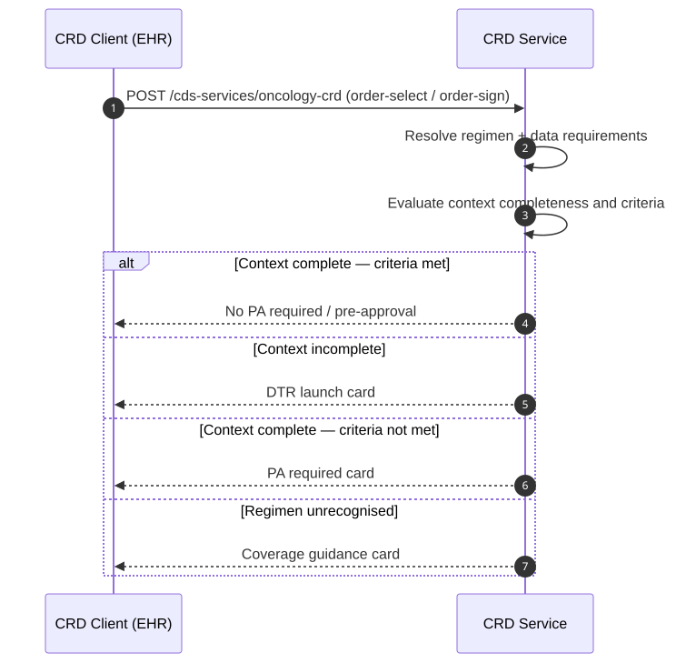

Oncology Guideline and Coverage Authorization (OGCA)
0.1.0 - ci-build
US
Oncology Guideline and Coverage Authorization (OGCA)
0.1.0 - ci-build
US
Oncology Guideline and Coverage Authorization (OGCA) - Local Development build (v0.1.0) built by the FHIR (HL7® FHIR® Standard) Build Tools. See the Directory of published versions
| Page standards status: Informative |
This IG defines an oncology-specific extension for CDS Hooks order-select and order-sign
hooks, used within Da Vinci CRD. The extension carries the ordered regimen identity and the
cancer-specific data requirements needed for coverage evaluation.
Base CDS Hooks and Da Vinci CRD are not modified. This IG defines a CRD oncology profile: conditional requirements for systems claiming conformance to this IG.
For CDS Clients claiming conformance to this oncology CRD profile, when an anti-cancer therapy regimen is selected or signed, the client SHALL include the oncology CRD extension in the CDS Hooks request.
For CDS Services claiming conformance to this oncology CRD profile, the service SHALL be capable of interpreting the oncology CRD extension and the referenced anti-cancer regimen
RequestGroup. WhenregimenDefinitionis present the service SHOULD also resolve the referencedPlanDefinition.
The extension key is org.hl7.davinci-crd.oncology. It has three components:
| Component | Required | Purpose |
|---|---|---|
orderedRegimen |
SHALL | Identifies the RequestGroup instance; optionally references the canonical PlanDefinition when known |
dataRequirements |
SHOULD | Explicitly identifies the cancer-specific data requirements Library. When absent, the CDS Service resolves the applicable Library from prefetch.primaryCancer. Provide this field when the patient has multiple active cancer conditions and disambiguation is needed. |
"extension": {
"org.hl7.davinci-crd.oncology": {
// orderedRegimen is REQUIRED — the CDS Service needs to know what was ordered.
"orderedRegimen": {
"reference": "RequestGroup/breast-cancer-regimen-001",
"regimenDefinition": "http://hl7.org/fhir/us/codex-ocpa/PlanDefinition/paclitaxel-trastuzumab-regimen" // OPTIONAL — omit when PlanDefinition is not available
},
// dataRequirements is OPTIONAL — include when the patient has multiple active
// cancer conditions and the EHR needs to tell the service which one this order
// is for. When absent, the service resolves the Library from prefetch.primaryCancer.
"dataRequirements": {
"purpose": "pre-approval",
"canonical": "http://hl7.org/fhir/us/codex-ocpa/Library/breast-cancer-pa-data-requirements|1.0.0"
}
}
}
The CDS Service resolves which OncologyDataRequirementsLibrary to apply using the
following precedence:
dataRequirements.canonical present — use the explicitly provided Library canonical.
This is the unambiguous path and is preferred when the EHR can supply it.dataRequirements absent — single active cancer condition — read
prefetch.primaryCancer, extract the cancer type code, and match against the
service's internal Library registry. This is the common case for most EHRs, which
know the patient's primary cancer from the condition list without needing to
populate a custom extension.dataRequirements absent — multiple active cancer conditions — the service
SHOULD return an info card asking the EHR to resubmit with dataRequirements.canonical
populated to disambiguate, rather than guessing which cancer this order is for.orderedRegimen field detailsOnly reference (the RequestGroup) is required in orderedRegimen. The
regimenDefinition field carrying the canonical PlanDefinition URL is OPTIONAL — many
EHR order-sets do not have a published canonical definition, and a conformant client MAY
omit it. When present, regimenDefinition allows the CDS Service to resolve the full
protocol definition for richer evaluation. The minimum viable payload contains only
reference and, when the profile is known, profile:
"orderedRegimen": {
"reference": "RequestGroup/breast-cancer-regimen-001"
}
For pilots or simpler implementations, dataRequirements may include inline DataRequirement
entries rather than a canonical Library reference. See Data Requirements Pattern.
The CDS Hooks discovery endpoint (GET /cds-services) is the first point of contact between an
EHR and a conformant OGCA service. This IG defines two complementary layers for advertising data
requirements at discovery time, serving different levels of client capability.
prefetch (standard EHR compatibility)A conformant CDS Service SHALL include prefetch entries derived from each supported
OncologyDataRequirementsLibrary. This ensures that any CDS Hooks-compliant EHR can pre-fetch
the required patient context without OGCA-specific awareness.
Prefetch query templates are a flattened projection of the Library.dataRequirement[] entries —
each DataRequirement with a code filter maps to a FHIR search query keyed by a descriptive name:
{
"services": [{
"id": "oncology-crd",
"hook": "order-select",
"title": "Oncology Coverage Requirements Discovery",
"prefetch": {
"primaryCancer": "Condition?patient=&code:in=http://hl7.org/fhir/us/mcode/ValueSet/mcode-primary-cancer-disorder-vs",
"cancerStage": "Observation?patient=&code:in=http://hl7.org/fhir/us/mcode/ValueSet/mcode-observation-codes-vs",
"biomarkers": "Observation?patient=&code:in=http://hl7.org/fhir/us/mcode/ValueSet/mcode-tumor-marker-test-vs",
"lineOfTherapy": "Observation?patient=&code:in=http://hl7.org/fhir/us/codex-ocpa/ValueSet/treatment-line-vs",
"performanceStatus": "Observation?patient=&code:in=http://hl7.org/fhir/us/mcode/ValueSet/mcode-ecog-performance-status-vs"
}
}]
}
extension (OGCA-aware clients)A conformant CDS Service SHOULD advertise the canonical URL(s) of supported
OncologyDataRequirementsLibrary instances via the org.hl7.davinci-crd.oncology extension on
the discovery service object. This enables OGCA-aware clients to retrieve the full structured
DataRequirement[] entries before the hook fires.
{
"services": [{
"id": "oncology-crd",
"hook": "order-select",
"title": "Oncology Coverage Requirements Discovery",
"prefetch": { "...": "..." },
"extension": {
"org.hl7.davinci-crd.oncology": {
"dataRequirementsLibraries": [
{
"canonical": "http://hl7.org/fhir/us/codex-ocpa/Library/breast-cancer-pa-data-requirements|1.0.0",
"cancerType": {
"system": "http://snomed.info/sct",
"code": "254837009",
"display": "Breast cancer"
}
}
],
"supportedRegimenProfiles": [
"http://hl7.org/fhir/us/codex-ocpa/StructureDefinition/ocpa-anticancer-regimen-requestgroup"
]
}
}
}]
}
An OGCA-aware CDS Client that resolves the advertised Library canonical MAY use the retrieved
DataRequirement[] entries to pre-stage the DTR Questionnaire, validate prefetch completeness,
or negotiate capability with the service before submitting the hook.
The OncologyDataRequirementsLibrary is the single source of truth. The two discovery layers are
derivations of it:
OncologyDataRequirementsLibrary.dataRequirement[]
├── prefetch{} ← flattened FHIR query projection (Layer 1, standard EHRs)
└── extension{} ← canonical pointer to the Library (Layer 2, OGCA-aware clients)
Changes to a Library version propagate to both layers — implementers SHOULD regenerate prefetch templates when a new Library version is published.
| Actor | Requirement |
|---|---|
| CDS Service | SHALL include prefetch entries derived from each supported OncologyDataRequirementsLibrary |
| CDS Service | SHOULD advertise Library canonical URL(s) via the org.hl7.davinci-crd.oncology discovery extension |
| CDS Client (standard) | SHALL submit prefetch-populated context when pre-fetched data is available |
| CDS Client (OGCA-aware) | MAY fetch the advertised Library to pre-stage DTR or validate prefetch completeness before submitting the hook |
| Condition | CRD Response |
|---|---|
| Required context complete + criteria satisfied | No PA required, pre-approval, or silent success |
| Required context incomplete | Return DTR launch card |
| Required context complete but criteria not met | Return PA required or documentation required |
| Regimen cannot be evaluated | Return coverage/documentation guidance |

For a complete end-to-end walkthrough of all API calls — including the provider-initiated SMART launch flow and the automated CDS Hooks PA pipeline — see Workflow Walkthrough.
For the FHIR resource-level payloads, see Example: order-select request and Example: order-sign request.
IG © 2026+ HL7 International / Clinical Interoperability Council.
Package hl7.fhir.us.codex-ocpa#0.1.0 based on FHIR 4.0.1.
Generated
2026-05-18
Links: Table of Contents |
QA Report
| Version History |
 |
Propose a change
|
Propose a change